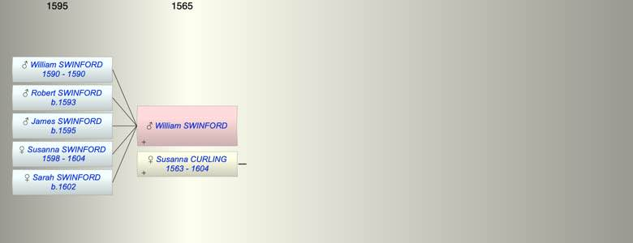

| [Index] |
| William SWINFORD |
|  |
| m. Susanna CURLING (1563 - 1604) at Minster |
| Children (5): |
| William SWINFORD (1590 - 1590) |
| Robert SWINFORD (1593 - ) |
| James SWINFORD (1595 - ) |
| Susanna SWINFORD (1598 - 1604) |
| Sarah SWINFORD (1602 - ) |
| Events in William SWINFORD's life | |||||
| Date | Age | Event | Place | Notes | Src |
| Married Susanna CURLING | Minster | Note 1 | |||
| 1590 | Birth of son William SWINFORD | Minster | bap Minster 5 Apr 1590 | ||
| 1590 | Death of son William SWINFORD | Minster | buried Minster 18 Aug 1590 | ||
| 1593 | Birth of son Robert SWINFORD | Minster | bap Minster 22 Jun 1593 | ||
| 1595 | Birth of son James SWINFORD | Minster | bap Minster 28 Sep 1595 | ||
| 1598 | Birth of daughter Susanna SWINFORD | Minster | bap Minster 27 Aug 1598 | ||
| 1602 | Birth of daughter Sarah SWINFORD | Minster | bap Minster 25 Apr 1602 | ||
| 1604 | Death of daughter Susanna SWINFORD (aged 6) | Minster | buried MInster 16 Mar 1604 | ||
| 1604 | Death of wife Susanna CURLING (aged 41) | Minster | buried Minster 26 Aug 1604 | ||
| Note 1: married at St Mary Minster ex FMP PR |
| Created on a Mac™ using iFamily for Mac™ on 8 Oct 2023 |